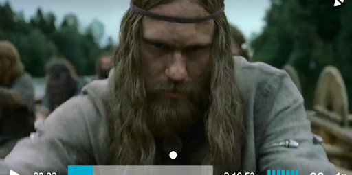
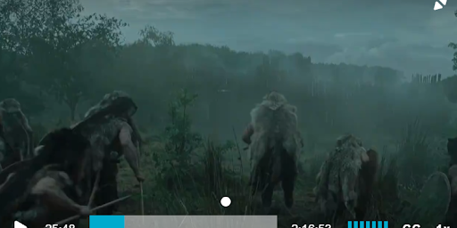
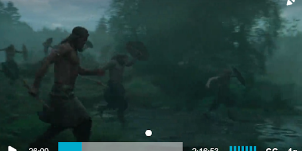
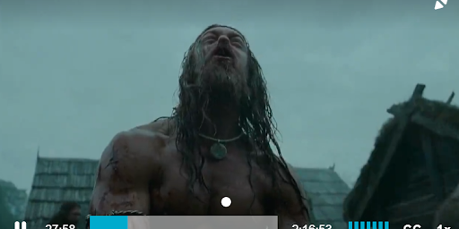
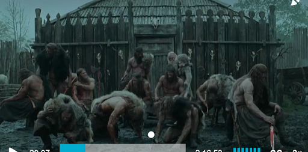
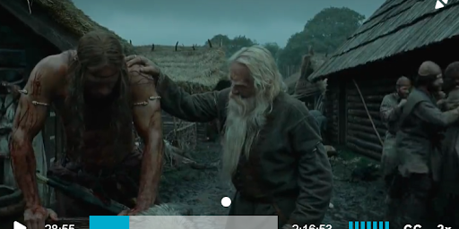

⚔️ The Village Raid 🛡️

CU on Amleth, dirt all over his face, serious look. He is a man now. The rugged look shows off his transformation and his animalistic nature coming out.

HH/CR following the group of vikings prowling and sneaking.

TS, SR of the vikings marching into battle, high action, spears flying past them. Mainly Amleth is being tracked.

LA, Amleth howling. Very animalistic and he is imitating a wolf like he was as a child as well. After literally biting another man. Bloodied from battle.

The men huddle together like a pack of wolves/dogs, panting. The wolf hide can be seen slung over their shoulders too. The tribalistic music stopped for a quiet calm after the battle.

Amleth hunched over MS, off to the left of the frame. His front is in shadow but the blood from battle is visible, as the old man confirms his brutality. He appears beast-like.